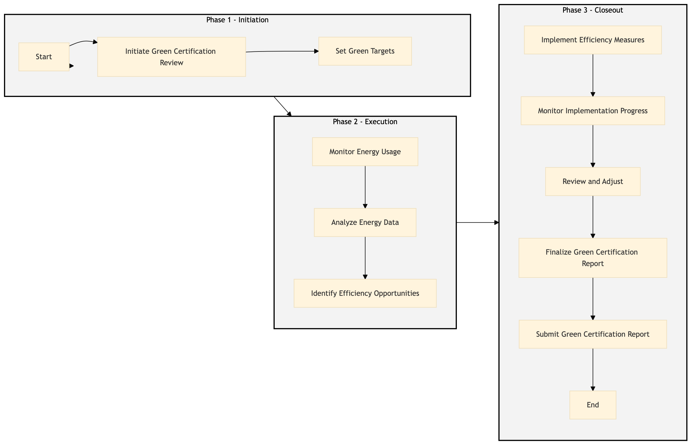

| Role | Steps |
|---|---|
| Sustainability Manager | 1.1 1.2 2.2 2.3 3.1 3.2 3.3 3.4 3.5 |
| Facilities Engineer | 2.1 3.1 3.2 |
| Executive Housekeeper | 3.1 |
| Step | Name | Role | System | Input | Output | KPI | Dec? | Exc? | Pain Point / Risk |
|---|---|---|---|---|---|---|---|---|---|
| 1.1 | Initiate Green Certification Review | Sustainability Manager | Oracle OPERA Cloud | Annual energy usage report | Green certification review plan | Less than 2 days to complete the initial review | N | Y | Inconsistent data reporting across different departments |
| 1.2 | Set Green Targets | Sustainability Manager | Oracle OPERA Cloud, IDeaS G3 RMS | Green certification review plan | Green targets and action plans | Less than 1 week to set targets | N | Y | Lack of alignment between sustainability goals and operational needs |
| 2.1 | Monitor Energy Usage | Facilities Engineer | Schneider EcoStruxure, Oracle OPERA Cloud | Green targets and action plans | Daily energy usage reports | Less than 1 hour to generate daily reports | N | Y | Inaccurate data from sensors or meters |
| 2.2 | Analyze Energy Data | Sustainability Manager | Microsoft Power BI, Oracle OPERA Cloud | Daily energy usage reports | Energy consumption analysis report | Less than 1 day to analyze data | N | Y | Complexity in interpreting large datasets |
| 2.3 | Identify Efficiency Opportunities | Sustainability Manager | Oracle OPERA Cloud, IDeaS G3 RMS | Energy consumption analysis report | Efficiency improvement recommendations | Less than 2 days to identify opportunities | N | Y | Resistance to change among staff |
| 3.1 | Implement Efficiency Measures | Facilities Engineer, Executive Housekeeper | Oracle OPERA Cloud, Honeywell INNCOM | Efficiency improvement recommendations | Implementation plan and status updates | Less than 1 week to implement measures | Y | Y | Limited budget for upgrades |
| 3.2 | Monitor Implementation Progress | Sustainability Manager, Facilities Engineer | Oracle OPERA Cloud, Schneider EcoStruxure | Implementation plan and status updates | Progress report | Less than 1 week to monitor progress | N | Y | Delayed implementation due to unforeseen issues |
| 3.3 | Review and Adjust | Sustainability Manager, Facilities Engineer | Oracle OPERA Cloud, IDeaS G3 RMS | Progress report | Adjusted implementation plan | Less than 1 week to review and adjust | Y | Y | Inconsistent monitoring and reporting |
| 3.4 | Finalize Green Certification Report | Sustainability Manager | Oracle OPERA Cloud, Microsoft Power BI | Adjusted implementation plan | Green certification report | Less than 2 weeks to finalize the report | N | Y | Complexity in compiling and presenting data |
| 3.5 | Submit Green Certification Report | Sustainability Manager | Oracle OPERA Cloud, IDeaS G3 RMS | Green certification report | Submitted green certification report | Less than 1 day to submit the report | N | Y | Delays in external certification processes |
The Green Certification Management process at a Marriott full-service hotel involves monitoring and managing energy consumption to achieve sustainability goals.